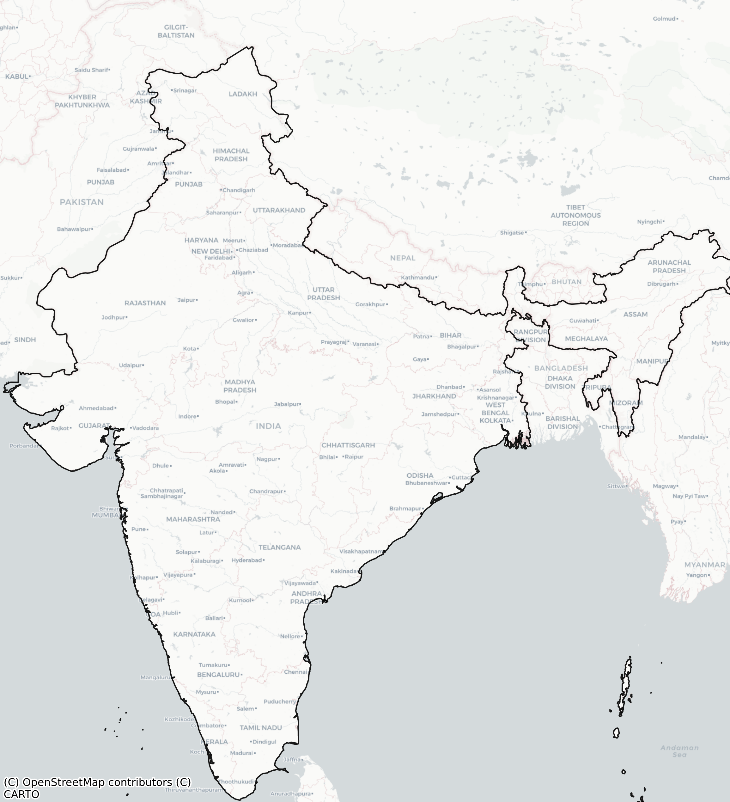

From warehouse vision to continuous last‑mile assurance.
This demo shows how AIonOS can help NX Express turn fragmented operational signals into decisive action: industrial engineering in the warehouse, yard control with waiting-time intelligence, real-time network correction, dynamic cargo pricing, and AI-audited proof of delivery.
What NX operations teams see today
- Video feeds, control towers, manual escalations
- Exceptions discovered after service is already at risk
- Margin pressure from network inefficiency and idle capacity
What AIonOS enables instead
- Agents that interpret scenes, queues, ETA risk and proof quality
- Continuous decisioning from node to network
- Customer promises protected with measurable business outcomes
Warehouse vision turns AI agents into industrial engineers and safety auditors.
Instead of only watching footage, the agent measures throughput, locates peak-load windows, flags flow imbalance, and watches for unsafe operating patterns before they turn into incidents or missed dispatches.
Yard vision gives AI agents a live read on idle docks, waiting time, queue buildup, and security risk.
This is where blind spots become visible. The agent sees every inbound movement, estimates congestion, spots trailers stalled too long, and elevates suspicious patterns before they become SLA slips or loss events.
An agentic twin corrects disruptions in real time with heuristic rerouting and inventory protection.
When corridors fail, the twin does not just visualize risk. It decides. It recomputes paths, protects service-critical nodes, and shows operations leaders how to recover network stability before customers feel the disruption.

An AI pricing agent turns capacity telemetry into dynamic cargo pricing.
If fill is light, the agent pushes discount logic to stimulate demand. As capacity tightens, it protects margin. Every shipment is priced against network reality, not static tariffs.
The last mile is audited continuously by an AI POD validator.
The final proof is not just a photo. The agent validates the recipient, the location, and the integrity of proof, reducing disputes and making delivery confirmation trustworthy at scale.
What this means for NX Express.
Warehouse agents improve flow and safety. Yard agents compress waiting time and surface risk. The network twin protects service continuity. Pricing agents defend margin. POD agents close the loop on delivery truth. Together, AIonOS turns logistics operations into an intelligent, self-correcting system.
Launch a 10-week pilot across one warehouse, one yard, one network flow, and one last-mile lane.
Define the baseline, instrument the operating points, and measure time-to-decision, queue reduction, ETA recovery, pricing uplift, and POD dispute reduction. Leave the first workshop with a scoped start date.